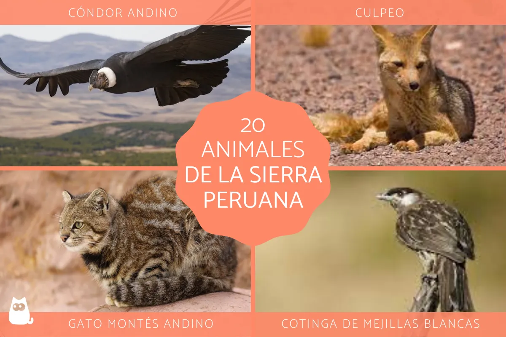

Haz clic en las imágenes de abajo para navegar entre las páginas:
Perú es un país ubicado en Suramérica, específicamente al oeste de esta región. Limita con Ecuador, Colombia, Brasil, Bolivia, Chile y todo su lado oeste con el océano pacífico. De esta manera, el país presenta una variedad de ecosistemas que incluyen zonas áridas, selva tropical, picos andinos y una importante región costera. Es así como Perú se encuentra entre los denominados países megadiversos, gracias a la fauna y flora que habita en el mismo. Una de las áreas donde encontramos diversos tipos de animales es en la parte litoral del país. Por ello, en este artículo de ExpertoAnimal te presentamos información sobre los animales de la costa peruana

La sierra peruana, que también se le conoce como la región alto andina, es una zona montañosa que forma parte de la Cordillera de los Andes, atravesando esta última varios países suramericanos. La sierra se extiende a lo largo de Perú, de norte a sur, y está formada por una variedad de ecosistemas con un clima que varia de templado a frío según la altura, la cual puede llegar cerca de los 7.000 metros sobre el nivel del mar. De esta manera, esta importante región es el lugar de una vasta biodiversidad y, en este artículo de ExpertoAnimal, queremos presentarte 20 animales de la sierra peruana. Algunos de los ejemplos de animales más representativos de la sierra de Perú son el cóndor andino, el gallito de las rocas andino y el guanaco. Sigue leyendo para conocer el resto.